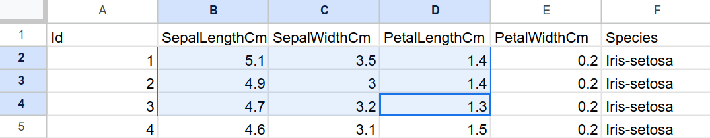
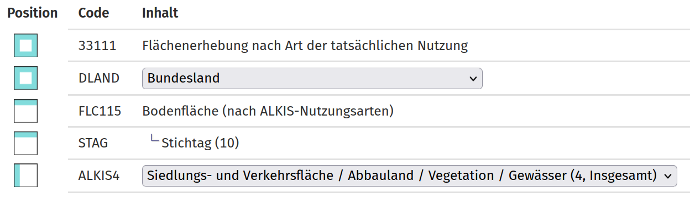

library(janitor)
library(readxl)
library(tidyverse)6 Datenimport und -export
In Zeiten fortschreitender Digitalisierung wächst der Bestand an frei zur Verfügung stehenden Daten in unterschiedlichsten Formaten mit jedem Moment. Nachdem wir bislang nur mit vorgefertigten Datensätzen gearbeitet haben, möchten wir als nächstes lernen, eigens ausgewählte Daten in unsere R-Sitzung zu laden und sie nach getaner Arbeit abzuspeichern. Dabei werden wir uns auf die gängige Tabellenformate beschränken, bevor wir später (Kapitel 9) Geodaten zu importieren lernen.
In diesem Kapitel lernen wir…
- …wie wir Tabellen im Text- und Excel-Format importieren.
- …wie wir angeben, welche Teile einer Tabelle zu importieren sind, welche Datentypen unsere Tabellen enthalten und wie wir fehlende Werte kennzeichnen.
- …wie wir veränderte Tabellen in den Ursprungsformaten, aber auch in R-eigenen Formaten, exportieren.
Wir benötigen hierfür die folgenden Pakete:
6.1 Allgemeiner Ablauf
Sobald wir eine Tabelle importieren wollen, müssen wir uns meist eine Reihe an Fragen stellen.
- Welches Dateiformat liegt vor?
- An welchem Ort befindet sich die Datei?
- Liegt eine Kopfzeile (header) vor? Wenn ja, welche Namen enthält sie?
- Welche Datentypen (Kapitel 3.4) haben die einzelnen Spalten?
- Durch welches Trennzeichen sind die einzelnen Zellen voneinander getrennt (delimited)?
- Liegen fehlende Werte vor? Wenn ja, wodurch sind sie gekennzeichnet?
Wenn wir über diese Informationen verfügen, können wir mit geeigneten Funktionen die Daten wie gewünscht importieren und mit ihnen als data frame weiterarbeiten. Indem wir unseren Code dabei angemessen dokumentieren (Kapitel 2.3), gehen wir sicher, dass wir unsere Daten immer akkurat importieren können, wenn sich eine Ursprungsdatei verändert. Zudem können wir mit Kommiliton*innen und Kolleg*innen unseren Code teilen, sodass wir die Daten stets auf dieselbe Art und Weise “sehen”.
base R oder
tidyverse?
In den folgenden Ausführungen nutzen wir Funktionen aus den Paketen readr1 (das Teil des tidyverse ist, siehe (Wickham, Çetinkaya-Rundel, und Grolemund 2023, Kap. 7) und readxl. Das bedeutet jedoch nicht, dass nicht bereits base R viele Möglichkeiten böte. Tatsächlich sind auch “jüngere” Funktionen oft auf Basis von base R geschrieben worden. Deshalb lohnt es sich immer, auch diese kennenzlernen. Eine gute Einführung liefern Douglas u. a. (2024, Kap. 3.3 und 3.6).
6.2 CSV
6.2.1 Erste Ansicht
Das wohl einfachste Tabellenformat ist CSV. Dieses Kürzel steht für comma separated values, also “durch Kommata getrennte Werte”. Als Beispiel möchten wir uns die Tabelle students.csv näher anschauen (Wickham, Çetinkaya-Rundel, und Grolemund 2023, Kap. 7.2). Hierfür öffnen wir die Datei zunächst in ihrer “Rohform”, indem wir einen Browser oder einen Texteditor (wie Notepad unter Windows oder TextEdit unter macOS) heranziehen.
Student ID,Full Name,favourite.food,mealPlan,AGE
1,Sunil Huffmann,Strawberry yoghurt,Lunch only,4
2,Barclay Lynn,French fries,Lunch only,5
3,Jayendra Lyne,N/A,Breakfast and lunch,7
4,Leon Rossini,Anchovies,Lunch only,
5,Chidiegwu Dunkel,Pizza,Breakfast and lunch,five
6,Güvenç Attila,Ice cream,Lunch only,6Die erste Zeile (Student ID,Full Name,favourite.food,mealPlan,AGE) gibt dabei die Spaltennamen an. Desweiteren sehen wir, dass die einzelnen Zellen durch Kommata getrennt sind. Diese Ansicht ist bei der ersten Betrachtung aber ungewohnt. In der Tabellenansicht sähe students.csv gleich verständlicher aus.
| Student ID | Full Name | favourite.food | mealPlan | AGE |
|---|---|---|---|---|
| 1 | Sunil Huffmann | Strawberry yoghurt | Lunch only | 4 |
| 2 | Barclay Lynn | French fries | Lunch only | 5 |
| 3 | Jayendra Lyne | N/A | Breakfast and lunch | 7 |
| 4 | Leon Rossini | Anchovies | Lunch only | NA |
| 5 | Chidiegwu Dunkel | Pizza | Breakfast and lunch | five |
| 6 | Güvenç Attila | Ice cream | Lunch only | 6 |
6.2.2 Importieren
Um eine derartige CSV-Datei zu importieren, nutzen wir die Funktion read_csv()2. Deren wichtigster Parameter ist file, der als Argument einen Dateipfad benötigt. Dieser Dateipfad kann auf eine lokale Datei (eine Datei, die sich auf unserem Rechner befindet) verweisen. Wenn wir students.csv in einem Ordner namens files in unserem Projekt gespeichert haben, würden wir die Datei mit dem folgenden Code einlesen und einem Objekt namens students zuschreiben.
students <- read_csv(file = "./files/students.csv")Rows: 6 Columns: 5
── Column specification ────────────────────────────────────────────────────────
Delimiter: ","
chr (4): Full Name, favourite.food, mealPlan, AGE
dbl (1): Student ID
ℹ Use `spec()` to retrieve the full column specification for this data.
ℹ Specify the column types or set `show_col_types = FALSE` to quiet this message.Alternativ können wir die CSV-Datei über Ihre Internetadresse importieren, wobei wir die Internetadresse in Anführungszeichen setzen müssen.
students <- read_csv(file = "https://pos.it/r4ds-students-csv")Rows: 6 Columns: 5
── Column specification ────────────────────────────────────────────────────────
Delimiter: ","
chr (4): Full Name, favourite.food, mealPlan, AGE
dbl (1): Student ID
ℹ Use `spec()` to retrieve the full column specification for this data.
ℹ Specify the column types or set `show_col_types = FALSE` to quiet this message.Einmal ausgeführt, liefert uns read_csv() bereits wichtige Hinweise darauf, was die Funktion getan hat:
Delimiter: ",": Kommata wurden korrekterweise als Trennzeichnen genutzt.chr (4): Full Name, favourite.food, mealPlan, AGE: Vier Spalten wurden als Text (character) importiert.dbl (1): Student ID: Eine Spalte wurde als ganze Zahl (double) importiert.
Um zu überprüfen, ob dieser Import damit erfolgreich abgeschlossen ist, schauen wir uns students.csv nochmals an.
students# A tibble: 6 × 5
`Student ID` `Full Name` favourite.food mealPlan AGE
<dbl> <chr> <chr> <chr> <chr>
1 1 Sunil Huffmann Strawberry yoghurt Lunch only 4
2 2 Barclay Lynn French fries Lunch only 5
3 3 Jayendra Lyne N/A Breakfast and lunch 7
4 4 Leon Rossini Anchovies Lunch only <NA>
5 5 Chidiegwu Dunkel Pizza Breakfast and lunch five
6 6 Güvenç Attila Ice cream Lunch only 6 Auf Anhieb erkennen wir mehrere Probleme, die wir angehen möchten:
- Die Variablennamen sind uneinheitlich und deshalb schwer lesbar. Besser wäre es, wenn alle Namen eine ähnliche Struktur hätten.
- In der Spalte
favourite.foodist mitN/Aein “Wert” enthalten, der eigentlich für einen fehlenden Wert steht. Besser wäre es, wenn dieser Wert von R alsNAerkannt würde. - Die Werte der Spalte
mealPlansind alscharacter-Werte eingelesen, beinhalten aber tatsächlich nur zwei Ausprägungen. Besser wäre es, wenn sie alsfactoreingelesen würden. - In der Spalte
AGEbefindet sich mit"five"keine Zahl, sondern ein Text, weshalb die gesamte Spalte fälschlicherweise alscharactereingelesen wurden.
6.2.2.1 Einheitliche Spaltennamen
Um die Spaltennamen anzupassen, können wir beim Import auf eine nützliche Funktion namens clean_names() aus dem janitor-Paket zugreifen. clean_names() “säubert” die Namen eines data frames so, dass sie alle der Schreibweise snake_case folgen (Kapitel 3.1.1). Sobald wir janitor geladen haben, können wir die clean_names() einfach mittels der pipe mit read_csv() verbinden.
students <- read_csv(file = "https://pos.it/r4ds-students-csv") |>
clean_names() # Spaltennamen: snake_case
students# A tibble: 6 × 5
student_id full_name favourite_food meal_plan age
<dbl> <chr> <chr> <chr> <chr>
1 1 Sunil Huffmann Strawberry yoghurt Lunch only 4
2 2 Barclay Lynn French fries Lunch only 5
3 3 Jayendra Lyne N/A Breakfast and lunch 7
4 4 Leon Rossini Anchovies Lunch only <NA>
5 5 Chidiegwu Dunkel Pizza Breakfast and lunch five
6 6 Güvenç Attila Ice cream Lunch only 6 6.2.2.2 Angabe fehlender Werte
Es kommt immer wieder vor, dass in Tabellen fehlende Werte auf unterschiedliche Weise kenntlich gemacht werden. Standardmäßig hält read_csv() jedoch nur leere Zellen ("") für wirklich fehlende Werte und übersieht damit Angaben wie "N/A". Um dies zu ändern, nutzen wir den Parameter na, dem wir einen Vektor mit all jenen Werten als Argument geben, die für fehlende Werte stehen. Zusätzlich zu "" möchten wir also mit na = c("", "N/A") auch noch "N/A" explizit angeben.
students <- read_csv(file = "https://pos.it/r4ds-students-csv",
na = c("", "N/A")) |> # NA-Werte: "" und "N/A"
clean_names()
students# A tibble: 6 × 5
student_id full_name favourite_food meal_plan age
<dbl> <chr> <chr> <chr> <chr>
1 1 Sunil Huffmann Strawberry yoghurt Lunch only 4
2 2 Barclay Lynn French fries Lunch only 5
3 3 Jayendra Lyne <NA> Breakfast and lunch 7
4 4 Leon Rossini Anchovies Lunch only <NA>
5 5 Chidiegwu Dunkel Pizza Breakfast and lunch five
6 6 Güvenç Attila Ice cream Lunch only 6 6.2.2.3 Datentypen für Spalten angeben
Standardmäßig “rät” readr bei jeder Spalte, um welchen Datentypen es sich handelt (Wickham, Çetinkaya-Rundel, und Grolemund 2023, Kap. 7.3.1). Nicht immer ist readrs Vermutung dabei richtig. Wenn wir möchten, dass meal_plan statt als character als factor eingelesen wird, können wir hierfür den Parameter col_types (column types) nutzen, um für jede Spalte einen eigenen Datentyp anzugeben. col_types benötigt dabei eine Funktion namens cols, innerhalb derer wir für jede Spalte, bei der wir von readrs Rat abweichen wollen angeben, eine der folgenden Funktionen nutzen:3
col_logical(): Die Variable soll alslogicaleingelesen werden.col_integer(): Die Variable soll alsintegereingelesen werden.col_double(): Die Variable soll alsdoubleeingelesen werden.col_character(): Die Variable soll alscharactereingelesen werden.col_factor(): Die Variable soll alsfactoreingelesen werden.col_date(): Die Variable soll alsdateeingelesen werden.col_datetime(): Die Variable soll alsdatetimeeingelesen werden.col_skip(): Die Variable soll übersprungen (skip) werden.
Mit col_types = cols(mealPlan = col_factor(levels = c("Lunch only", "Breakfast and lunch"))) geben wir also innerhalb von read_csv() an, dass mealPlan als factor eingelesen werden soll und dabei die zwei vorhandenen Ausprägungen ("Lunch only" und "Breakfast and lunch") als levels genutzt werden sollen.
students <- read_csv("https://pos.it/r4ds-students-csv",
na = c("", "N/A"),
col_types = cols(mealPlan = col_factor(levels = c("Lunch only", "Breakfast and lunch"))) ) |> # Spaltentypen: mealPlan als factor
clean_names()
students# A tibble: 6 × 5
student_id full_name favourite_food meal_plan age
<dbl> <chr> <chr> <fct> <chr>
1 1 Sunil Huffmann Strawberry yoghurt Lunch only 4
2 2 Barclay Lynn French fries Lunch only 5
3 3 Jayendra Lyne <NA> Breakfast and lunch 7
4 4 Leon Rossini Anchovies Lunch only <NA>
5 5 Chidiegwu Dunkel Pizza Breakfast and lunch five
6 6 Güvenç Attila Ice cream Lunch only 6 Möchten wir den Datentyp einer weiteren Variable ändern und zum Beispiel Student ID als integer einlesen, ergänzen wir unseren cols()-Aufruf nur geringfügig.
students <- read_csv("https://pos.it/r4ds-students-csv",
na = c("", "N/A"),
col_types = cols(mealPlan = col_factor(levels = c("Lunch only", "Breakfast and lunch")),
`Student ID` = col_integer()) ) |> # Spaltentypen: mealPlan als factor, `Student ID` als integer
clean_names()
students# A tibble: 6 × 5
student_id full_name favourite_food meal_plan age
<int> <chr> <chr> <fct> <chr>
1 1 Sunil Huffmann Strawberry yoghurt Lunch only 4
2 2 Barclay Lynn French fries Lunch only 5
3 3 Jayendra Lyne <NA> Breakfast and lunch 7
4 4 Leon Rossini Anchovies Lunch only <NA>
5 5 Chidiegwu Dunkel Pizza Breakfast and lunch five
6 6 Güvenç Attila Ice cream Lunch only 6
Anpassungen nach dem Import
Tatsächlich handelt es sich bei age aber nicht um eine Variablem vom Typ Text, sondern vom Typ Zahl. Wenn wir im Rahmen von col_types dies aber mit col_integer() oder col_double() angäben, würde read_csv() den Wert five ignorieren und als NA behandeln, weil es einen character-Wert nicht in eine Zahl umwandeln kann.
students <- read_csv("https://pos.it/r4ds-students-csv",
na = c("", "N/A"),
col_types = cols(mealPlan = col_factor(levels = c("Lunch only", "Breakfast and lunch")),
`Student ID` = col_integer(),
AGE = col_double())) |> # Spaltentypen: mealPlan als factor, `Student ID` als integer, AGE als double
clean_names()
students# A tibble: 6 × 5
student_id full_name favourite_food meal_plan age
<int> <chr> <chr> <fct> <dbl>
1 1 Sunil Huffmann Strawberry yoghurt Lunch only 4
2 2 Barclay Lynn French fries Lunch only 5
3 3 Jayendra Lyne <NA> Breakfast and lunch 7
4 4 Leon Rossini Anchovies Lunch only NA
5 5 Chidiegwu Dunkel Pizza Breakfast and lunch NA
6 6 Güvenç Attila Ice cream Lunch only 6Ein solcher Fall ist nicht durch eine Angabe von Datentypen zu lösen. Stattdessen entscheiden wir uns dafür, erst die Tabelle einzulesen und sie dann zu verändern. Wir greifen hierfür zunächst auf unseren Code von Kapitel 6.2.2.3 zurück.
students <- read_csv("https://pos.it/r4ds-students-csv",
na = c("", "N/A"),
col_types = cols(mealPlan = col_factor(levels = c("Lunch only", "Breakfast and lunch")),
`Student ID` = col_integer()) ) |>
clean_names()
students# A tibble: 6 × 5
student_id full_name favourite_food meal_plan age
<int> <chr> <chr> <fct> <chr>
1 1 Sunil Huffmann Strawberry yoghurt Lunch only 4
2 2 Barclay Lynn French fries Lunch only 5
3 3 Jayendra Lyne <NA> Breakfast and lunch 7
4 4 Leon Rossini Anchovies Lunch only <NA>
5 5 Chidiegwu Dunkel Pizza Breakfast and lunch five
6 6 Güvenç Attila Ice cream Lunch only 6 Um Spalten einer bestehenden Tabelle zu verändern, nutzen wir mutate() (Kapitel 4.3.5). Um die age-Angabe "five" zu korrigieren, nutzen wir innerhalb von mutate() eine parse_*()-Hilfsfunktion (zu deutsch etwa “bestimmen” oder “analysieren”). Weil wir den Inhalt von age als Zahl erfassen möchten, schreiben wir age = parse_number(age).
students <- read_csv("https://pos.it/r4ds-students-csv",
na = c("", "N/A"),
col_types = cols(mealPlan = col_factor(levels = c("Lunch only", "Breakfast and lunch")),
`Student ID` = col_integer()) ) |>
clean_names() |>
mutate(age = parse_number(age)) # age: numberWarning: There was 1 warning in `mutate()`.
ℹ In argument: `age = parse_number(age)`.
Caused by warning:
! 1 parsing failure.
row col expected actual
5 -- a number fivestudents# A tibble: 6 × 5
student_id full_name favourite_food meal_plan age
<int> <chr> <chr> <fct> <dbl>
1 1 Sunil Huffmann Strawberry yoghurt Lunch only 4
2 2 Barclay Lynn French fries Lunch only 5
3 3 Jayendra Lyne <NA> Breakfast and lunch 7
4 4 Leon Rossini Anchovies Lunch only NA
5 5 Chidiegwu Dunkel Pizza Breakfast and lunch NA
6 6 Güvenç Attila Ice cream Lunch only 6Daraufhin liefert uns readr eine Warnung, dass es in einem Falle eine Zahl erwartet, aber ein Wort (five) erhalten hat, das es nicht als Zahl “lesen” kann. Deshalb müssen wir angeben, dass in diesem Fall ein Text ("5") verwendet werden soll, der sehr wohl in eine Zahl umgewandelt werden kann. Weil es sich um eine Wenn-Dann-Situation handelt, nutzen wir eine Bedingung (Kapitel 4.3.5.5).
Mit mutate(age = parse_number(if_else(age == "five", "5", age)) bewerkstelligen wir folgendes 4:
- Wenn die Spalte
ageden Wert"five"aufweist, dann wird er durch den Wert"5ersetzt. Ansonsten wird der jeweiligeage-Wert unverändert übernommen. - Im nächsten Schritt werden die Textwerte von
ageals Zahlen “geparst”, also gelesen. - Die Ergebnisse diese Lesevorgangs überschreiben die bisherigen
age-Werte.
students <- read_csv("https://pos.it/r4ds-students-csv",
na = c("", "N/A"),
col_types = cols(mealPlan = col_factor(levels = c("Lunch only", "Breakfast and lunch")),
`Student ID` = col_integer()) ) |>
clean_names() |>
mutate(age = parse_number(if_else(age == "five", "5", age))) # age: number
students# A tibble: 6 × 5
student_id full_name favourite_food meal_plan age
<int> <chr> <chr> <fct> <dbl>
1 1 Sunil Huffmann Strawberry yoghurt Lunch only 4
2 2 Barclay Lynn French fries Lunch only 5
3 3 Jayendra Lyne <NA> Breakfast and lunch 7
4 4 Leon Rossini Anchovies Lunch only NA
5 5 Chidiegwu Dunkel Pizza Breakfast and lunch 5
6 6 Güvenç Attila Ice cream Lunch only 66.2.2.4 Zeilen überspringen
Nicht immer enthalten Dateien ausnahmslos Informationen, die uns interessieren. Nehmen wir an, wir hätten es mit einer Datei zu tun, die in den ersten Zeilen wichtige Informationen in Form sog. metadata enthält. Die eigentlichen Daten beginnen erst in der zweiten Zeile.
# Wichtige Informationen
Var_1,Var_2,Var_3
1,2,3
4,5,6Um die erste Zeile zu überspringen, setzen wir den Parameter skip auf 1. readr beginnt dann erst ab der zweiten Zeile mit dem Einlesen der Daten.
read_csv("# Wichtige Informationen
Var_1,Var_2,Var_3
1,2,3
4,5,6",
skip = 1) # Erste Zeile überspringen# A tibble: 2 × 3
Var_1 Var_2 Var_3
<dbl> <dbl> <dbl>
1 1 2 3
2 4 5 6Mit skip können wir also Zeilen “von oben” überspringen. Nicht selten weisen Tabellen aber auch Fußzeilen auf, die uns ebensowenig interessieren. In diesem Fall möchten wir angeben, dass nur eine bestimmte Anzahl an Zeilen eingelesen werden soll. Hierzu dient der Parameter n_max. Möchten wir in unserem Beispiel die ergänzte Fußzeile ignorieren, geben wir mit n_max = 2 an, dass nur zwei Zeilen eingelesen werden sollen.
read_csv("# Wichtige Informationen
Var_1,Var_2,Var_3
1,2,3
4,5,6,
# Nochmal wichtige Informationen",
skip = 1,
n_max = 2) # Maximal drei Zeilen einlesen# A tibble: 2 × 3
Var_1 Var_2 Var_3
<dbl> <dbl> <dbl>
1 1 2 3
2 4 5 66.2.2.5 Keine Spaltennamen nutzen
Manchmal kommt es vor, dass eine Datei keine Spaltenbeschriftungen aufweist. Wenn wir dies nicht wüssten, würden die Werte der ersten Zeile standardmäßig von readr als Beschriftungen genutzt werden.
read_csv("1,2,3
4,5,6")# A tibble: 1 × 3
`1` `2` `3`
<dbl> <dbl> <dbl>
1 4 5 6Um dieses (ansonsten nützliche) Verhalten zu unterdrücken und keine Spaltennamen einzulesen, können wir den Parameter col_names auf FALSE setzen. In einem solchen Fall vergibt R automatisch fortlaufende Variablennamen wie X1, X2, X3 usw.
read_csv("1,2,3
4,5,6",
col_names = FALSE) # Keine Spaltennamen# A tibble: 2 × 3
X1 X2 X3
<dbl> <dbl> <dbl>
1 1 2 3
2 4 5 66.2.2.6 Eigene Spaltennamen angeben
Wenn wir eine Tabelle mit automatisch erzeugten Variablennamen vermeiden wollen, können wir auch beim Einlesen dem Parameter col_names einen Vektor mit entsprechenden Namen geben.
read_csv("1,2,3
4,5,6",
col_names = c("Variable_1", "Variable_2", "Variable_3")) # Eigene Spaltennamen vergeben# A tibble: 2 × 3
Variable_1 Variable_2 Variable_3
<dbl> <dbl> <dbl>
1 1 2 3
2 4 5 66.2.3 Exportieren
Um eine einmal importierte Tabelle wieder als CSV zu exportieren können wir das Gegenstück zu read_csv() nutzen, welches passenderweise write_csv() heißt.5 Wir möchten unseren sauber importierten data frame students exportieren.
students# A tibble: 6 × 5
student_id full_name favourite_food meal_plan age
<int> <chr> <chr> <fct> <dbl>
1 1 Sunil Huffmann Strawberry yoghurt Lunch only 4
2 2 Barclay Lynn French fries Lunch only 5
3 3 Jayendra Lyne <NA> Breakfast and lunch 7
4 4 Leon Rossini Anchovies Lunch only NA
5 5 Chidiegwu Dunkel Pizza Breakfast and lunch 5
6 6 Güvenç Attila Ice cream Lunch only 6Um dies zu tun, müssen wir eine Tabelle (x) auswählen und zudem einen Dateinamen bzw. Dateipfad (file) angeben, der auf .csv endet. Für weitere Funktionalitäten lohnt sich ein Blick in die Dokumentation (?write_csv).
write_csv(x = students,
file = "./files/students_exported.csv")Wie wir sehen, wird die neu erzeugte Datei students_exported.csv auch ohne weiteres wieder korrekt eingelesen.
read_csv(file = "./files/students_exported.csv")Rows: 6 Columns: 5
── Column specification ────────────────────────────────────────────────────────
Delimiter: ","
chr (3): full_name, favourite_food, meal_plan
dbl (2): student_id, age
ℹ Use `spec()` to retrieve the full column specification for this data.
ℹ Specify the column types or set `show_col_types = FALSE` to quiet this message.# A tibble: 6 × 5
student_id full_name favourite_food meal_plan age
<dbl> <chr> <chr> <chr> <dbl>
1 1 Sunil Huffmann Strawberry yoghurt Lunch only 4
2 2 Barclay Lynn French fries Lunch only 5
3 3 Jayendra Lyne <NA> Breakfast and lunch 7
4 4 Leon Rossini Anchovies Lunch only NA
5 5 Chidiegwu Dunkel Pizza Breakfast and lunch 5
6 6 Güvenç Attila Ice cream Lunch only 66.2.4 Verwandte Funktionen
Sobald wir einmal die Logik von read_csv() verstanden haben, können wir diese Wissen leicht auf verwandte Funktionen übertragen. Tatsächlich finden sich im CSV-Format nämlich unterschiedliche Arten, welche Trennzeichen für Zellenwerte oder welche Dezimalzeichen verwendet werden. Neben read_csv() sind u.a die folgenden Funktionen entsprechend gut zu kennen (Wickham, Çetinkaya-Rundel, und Grolemund 2023, Kap. 7.2.3):
read_csv2(): Diese Funktion verwendet Semikola (;) als Trennzeichen und Kommata (,) als Dezimalzeichen. Dieser Standard außerhalb des englischsprachigen Raums geläufig.read_tsv(): Diese Funktion verwendet Einschübe (tabs) als Trennzeichen.read_delim(): Diese Funktion kann Tabellen mit jedem möglichen Trennzeichen einlesen, sofern man es angibt. Viele andereread_*()-Funktionen basieren auf ihr.
Für jede read_*()-Funktion existiert zudem eine ergänzende write_*()-Funktion.
6.3 XLSX und XLS
6.3.1 Erste Ansicht
Aufgrund der Verbreitung von Microsoft Office-Produkten sind die Dateiformate XLS bzw. XLSX oftmals unumgänglich. Deshalb liegen gleich mehrere Pakete vor, um Daten in diesem Formaten in R zu importieren. In diesem Abschnitt möchten wir das Paket readxl kennenlernen. Als Beispieldatensatz dient uns sample.xlsx. Dieser Datensatz beinhaltet zwei Tabellenblätter (sheets). Das erste Tabellenblatt, bank-full, ist eine Tabelle mit 45211 Zeilen und 17 Spalten, die Informationen zu Bankkunden enthält.6

bank-full in sample.xlsx (Chugh 2023).Das zweite Tabellenblatt, iris, enthält eine Tabelle mit 150 Zeilen und 6 Spalten, die Informationen zu Merkmalen unterschiedlicher Blumen, nämlich Schwertlilien, enthält.7

iris in sample.xlsx (Chugh 2023).6.3.2 Importieren
Die Funktion, um den Inhalt einer Excel-Datei (XLS oder XLSX) einzulesen, heißt read_excel(). Der Parameter path benötigt (ebenso wie file in read_csv()) einen lokalen Dateipfad oder eine Internetadresse. Wenn wir nichts weiter einlesen, importiert R den Inhalt des ersten Tabellenblattes als tibble.
bank_full <- read_excel(path = "./files/sample.xlsx") # Angabe des Dateipfads
bank_full# A tibble: 45,211 × 17
age job marital education default balance housing loan contact day
<dbl> <chr> <chr> <chr> <chr> <dbl> <chr> <chr> <chr> <dbl>
1 58 manageme… married tertiary no 2143 yes no unknown 5
2 44 technici… single secondary no 29 yes no unknown 5
3 33 entrepre… married secondary no 2 yes yes unknown 5
4 47 blue-col… married unknown no 1506 yes no unknown 5
5 33 unknown single unknown no 1 no no unknown 5
6 35 manageme… married tertiary no 231 yes no unknown 5
7 28 manageme… single tertiary no 447 yes yes unknown 5
8 42 entrepre… divorc… tertiary yes 2 yes no unknown 5
9 58 retired married primary no 121 yes no unknown 5
10 43 technici… single secondary no 593 yes no unknown 5
# ℹ 45,201 more rows
# ℹ 7 more variables: month <chr>, duration <dbl>, campaign <dbl>, pdays <dbl>,
# previous <dbl>, poutcome <chr>, y <chr>6.3.2.1 Auswahl eines bestimmten Tabellenblattes
Wenn wir nicht das erste, sondern das zweite Tabellenblatt (iris) importieren möchten, nutzen wir den Parameter sheet. Wir können ihm entweder den Namen des Tabellenblattes…
iris <- read_excel(path = "./files/sample.xlsx",
sheet = "iris") # Auswahl des Tabellenblatts anhand des Namens
iris# A tibble: 150 × 6
Id SepalLengthCm SepalWidthCm PetalLengthCm PetalWidthCm Species
<dbl> <dbl> <dbl> <dbl> <dbl> <chr>
1 1 5.1 3.5 1.4 0.2 Iris-setosa
2 2 4.9 3 1.4 0.2 Iris-setosa
3 3 4.7 3.2 1.3 0.2 Iris-setosa
4 4 4.6 3.1 1.5 0.2 Iris-setosa
5 5 5 3.6 1.4 0.2 Iris-setosa
6 6 5.4 3.9 1.7 0.4 Iris-setosa
7 7 4.6 3.4 1.4 0.3 Iris-setosa
8 8 5 3.4 1.5 0.2 Iris-setosa
9 9 4.4 2.9 1.4 0.2 Iris-setosa
10 10 4.9 3.1 1.5 0.1 Iris-setosa
# ℹ 140 more rows…oder dessen Position angeben, um die jeweilige Tabelle zu importieren.
iris <- read_excel(path = "./files/sample.xlsx",
sheet = 2) # Auswahl des Tabellenblatts anhand der Position
iris# A tibble: 150 × 6
Id SepalLengthCm SepalWidthCm PetalLengthCm PetalWidthCm Species
<dbl> <dbl> <dbl> <dbl> <dbl> <chr>
1 1 5.1 3.5 1.4 0.2 Iris-setosa
2 2 4.9 3 1.4 0.2 Iris-setosa
3 3 4.7 3.2 1.3 0.2 Iris-setosa
4 4 4.6 3.1 1.5 0.2 Iris-setosa
5 5 5 3.6 1.4 0.2 Iris-setosa
6 6 5.4 3.9 1.7 0.4 Iris-setosa
7 7 4.6 3.4 1.4 0.3 Iris-setosa
8 8 5 3.4 1.5 0.2 Iris-setosa
9 9 4.4 2.9 1.4 0.2 Iris-setosa
10 10 4.9 3.1 1.5 0.1 Iris-setosa
# ℹ 140 more rows6.3.2.2 Auswahl eines Tabellenbereichs
Selten beinhaltet eine Excel-Datei ausschließlich Daten, die wir benötigen. Regelmäßig enthalten derartige Dateien etwa mehrere (mehr oder weniger nützliche) Überschriften, Fußnoten oder Diagramme. Deshalb können wir mit dem Parameter range einen Bereich im Tabellenblatt angeben, dessen Daten wir importieren möchten. Nehmen wir an, wir würden gerne die neun hier ausgewählten Zellenwerte importieren:

iris in sample.xlsx (Chugh 2023).Um nur diese Werte zu importieren, müssen wir die oberste linke Zeile sowie die unterste rechte Zeile angeben. Diese beiden Angaben begrenzen den Bereich, den wir importieren möchten. Diese Angabe können wir auf zwei Arten vornehmen:
- Excel-Schreibweise: Excel benennt Spalten mit Buchstaben und Zeilen mit Nummern. Der ausgewählte Bereich “beginnt” also bei B2 und “endet” bei D4. Unser Bereich lautet dieser Schreibweise nach B2:D4 (gelesen als “Spalte D, Zeile 2 bis Spalte D, Zeile 4”).
iris <- read_excel(path = "./files/sample.xlsx",
sheet = "iris",
range = "B2:D4") # Auswahl des Bereichs
iris# A tibble: 2 × 3
`5.1` `3.5` `1.4`
<dbl> <dbl> <dbl>
1 4.9 3 1.4
2 4.7 3.2 1.3- Zeilen/Spalten-Schreibweise: Viele andere Programme, darunter auch R, beginnen Angaben mit der Angabe der Zeile R (row) sowie der Spalte C (column), gefolgt jeweils von einer Nummer. Unser Bereich lautet dieser Schreibweise nach R2C2:R4C4 (gelesen als “Zeile 2, Spalte 2 bis Zeile 4, Spalte 4”).
iris <- read_excel(path = "./files/sample.xlsx",
sheet = "iris",
range = "R2C2:R4C4") # Auswahl des Bereichs
iris# A tibble: 2 × 3
`5.1` `3.5` `1.4`
<dbl> <dbl> <dbl>
1 4.9 3 1.4
2 4.7 3.2 1.3Um zu verhindern, dass die Werte der ersten eingelesenen Zeile als Spaltennamen importiert werden, müssen wir in solchen Fällen jedoch weitere Parameter heranziehen (Kapitel 6.3.2.7).
6.3.2.3 Einheitliche Spaltennamen
Anders als bank-full enthält iris Spaltennamen im sog. camel case (Kapitel 3.1.1). Um diese in snake case zu verwandeln, können wir wie zuvor clean_names() nutzen (Kapitel 6.2.2.1).
iris <- read_excel(path = "./files/sample.xlsx",
sheet = 2) |>
clean_names() # Spaltennamen: snake_case
iris# A tibble: 150 × 6
id sepal_length_cm sepal_width_cm petal_length_cm petal_width_cm species
<dbl> <dbl> <dbl> <dbl> <dbl> <chr>
1 1 5.1 3.5 1.4 0.2 Iris-set…
2 2 4.9 3 1.4 0.2 Iris-set…
3 3 4.7 3.2 1.3 0.2 Iris-set…
4 4 4.6 3.1 1.5 0.2 Iris-set…
5 5 5 3.6 1.4 0.2 Iris-set…
6 6 5.4 3.9 1.7 0.4 Iris-set…
7 7 4.6 3.4 1.4 0.3 Iris-set…
8 8 5 3.4 1.5 0.2 Iris-set…
9 9 4.4 2.9 1.4 0.2 Iris-set…
10 10 4.9 3.1 1.5 0.1 Iris-set…
# ℹ 140 more rows6.3.2.4 Angabe fehlender Werte
Die Angabe von Werten, die als fehlende Werte (NA) erkannt werden sollen, erfolgt analog zu read_csv() mittels des na-Parameters (Kapitel 6.2.2.2).
6.3.2.5 Datentypen für Spalten angeben
Standardmäßig “rät” read_excel() bei jeder Spalte, um welchen Datentypen es sich handelt, ebenso wie read_csv(). Nicht immer ist read_excel()s Vermutung dabei richtig. Wenn wir deshalb Datentypen selbst angeben wollen, nutzen wir eine ähnliche, nicht aber die gleiche Schreibweise wie bei read_csv().
Stattdessen benötigt der Parameter col_types einen Vektor, der soviele Werte enthält, wie Spalten eingelesen werden sollen. Wir können hierbei aus uns bekannten Werten wie "logical", "numeric", "date", "text", "list", "skip" oder "guess" wählen8. "skip" überspringt dabei eine Spalte und liest den Inhalt nicht ein (ebenso wie col_skip() es bei read_csv() tut, Kapitel 6.2.2.3). Glücklicherweise sind die von uns bisher eingelesenen Tabellen bank_full und iris aber fehlerfrei.
6.3.2.6 Zeilen überspringen
Auch bei read_excel() gibt es die Möglichkeit, mithilfe des Parameters skip anzugeben, ob – und wenn ja, wieviele – Zeilen übersprungen werden sollen. Anders als bei read_csv() gilt diese Angabe bei read_excel() jedoch auch für die Kopfzeile, die oft die Spaltennamen enthält. Dadurch werden die *Werte der ersten Zeile ohne weitere Angaben als Spaltennamen verwendet**.
iris <- read_excel(path = "./files/sample.xlsx",
sheet = "iris",
skip = 2) # Erste zwei Zeilen überspringen
iris# A tibble: 148 × 6
`2.0` `4.9` `3.0` `1.4` `0.2` `Iris-setosa`
<dbl> <dbl> <dbl> <dbl> <dbl> <chr>
1 3 4.7 3.2 1.3 0.2 Iris-setosa
2 4 4.6 3.1 1.5 0.2 Iris-setosa
3 5 5 3.6 1.4 0.2 Iris-setosa
4 6 5.4 3.9 1.7 0.4 Iris-setosa
5 7 4.6 3.4 1.4 0.3 Iris-setosa
6 8 5 3.4 1.5 0.2 Iris-setosa
7 9 4.4 2.9 1.4 0.2 Iris-setosa
8 10 4.9 3.1 1.5 0.1 Iris-setosa
9 11 5.4 3.7 1.5 0.2 Iris-setosa
10 12 4.8 3.4 1.6 0.2 Iris-setosa
# ℹ 138 more rows6.3.2.7 Keine Spaltennamen nutzen
Um das Problem falscher Spaltennamen zu beheben, kann – wie im Falle von read_csv() – innerhalb von read_excel() mit dem Parameter col_names mit FALSE angegeben werden, dass keine Spaltennamen eingelesen werden.
iris <- read_excel(path = "./files/sample.xlsx",
sheet = "iris",
col_names = FALSE) # Keine Spaltennamen einlesenNew names:
• `` -> `...1`
• `` -> `...2`
• `` -> `...3`
• `` -> `...4`
• `` -> `...5`
• `` -> `...6`iris# A tibble: 151 × 6
...1 ...2 ...3 ...4 ...5 ...6
<chr> <chr> <chr> <chr> <chr> <chr>
1 Id SepalLengthCm SepalWidthCm PetalLengthCm PetalWidthCm Species
2 1.0 5.1 3.5 1.4 0.2 Iris-setosa
3 2.0 4.9 3.0 1.4 0.2 Iris-setosa
4 3.0 4.7 3.2 1.3 0.2 Iris-setosa
5 4.0 4.6 3.1 1.5 0.2 Iris-setosa
6 5.0 5.0 3.6 1.4 0.2 Iris-setosa
7 6.0 5.4 3.9 1.7 0.4 Iris-setosa
8 7.0 4.6 3.4 1.4 0.3 Iris-setosa
9 8.0 5.0 3.4 1.5 0.2 Iris-setosa
10 9.0 4.4 2.9 1.4 0.2 Iris-setosa
# ℹ 141 more rowsDamit eventuell vorhandene Spaltennamen aber nicht fälschlicherweise als erste Datenwerte eingelesen werden und deshalb die gesamten Spalten als character erkannt werden, muss in solchen Fällen mit skip = 1 dafür gesorgt werden, die erste Zeile zu überspringen. readxl vergibt dann automatisch fortlaufende Variablennamen wie ...1, ...2, ...3 usw.
iris <- read_excel(path = "./files/sample.xlsx",
sheet = "iris",
col_names = FALSE, # Keine Spaltennamen einlesen
skip = 1) # Erste Zeile überspringen
iris# A tibble: 150 × 6
...1 ...2 ...3 ...4 ...5 ...6
<dbl> <dbl> <dbl> <dbl> <dbl> <chr>
1 1 5.1 3.5 1.4 0.2 Iris-setosa
2 2 4.9 3 1.4 0.2 Iris-setosa
3 3 4.7 3.2 1.3 0.2 Iris-setosa
4 4 4.6 3.1 1.5 0.2 Iris-setosa
5 5 5 3.6 1.4 0.2 Iris-setosa
6 6 5.4 3.9 1.7 0.4 Iris-setosa
7 7 4.6 3.4 1.4 0.3 Iris-setosa
8 8 5 3.4 1.5 0.2 Iris-setosa
9 9 4.4 2.9 1.4 0.2 Iris-setosa
10 10 4.9 3.1 1.5 0.1 Iris-setosa
# ℹ 140 more rows6.3.2.8 Eigene Spaltennamen angeben
Wenn wir eine Tabelle mit automatisch erzeugten Variablennamen vermeiden wollen, können wir – genau wie zuvor bei der Nutzung von read_csv() – auch beim Einlesen dem Parameter col_names einen Vektor mit eigenen Namen geben.
iris <- read_excel(path = "./files/sample.xlsx",
sheet = "iris",
col_names = c("id", "sepal_length", "sepal_width", "petal_length", "petal_width", "species_name"), # Eigene Spaltennamen angeben
skip = 1)
iris# A tibble: 150 × 6
id sepal_length sepal_width petal_length petal_width species_name
<dbl> <dbl> <dbl> <dbl> <dbl> <chr>
1 1 5.1 3.5 1.4 0.2 Iris-setosa
2 2 4.9 3 1.4 0.2 Iris-setosa
3 3 4.7 3.2 1.3 0.2 Iris-setosa
4 4 4.6 3.1 1.5 0.2 Iris-setosa
5 5 5 3.6 1.4 0.2 Iris-setosa
6 6 5.4 3.9 1.7 0.4 Iris-setosa
7 7 4.6 3.4 1.4 0.3 Iris-setosa
8 8 5 3.4 1.5 0.2 Iris-setosa
9 9 4.4 2.9 1.4 0.2 Iris-setosa
10 10 4.9 3.1 1.5 0.1 Iris-setosa
# ℹ 140 more rows6.3.3 Exportieren
Wie der Name des Pakets es bereits andeutet, sind die Funktionen von readxl ausschließlich zum Importieren von Excel-Dateien gedacht. Mit der Funktion write_xlsx() aus dem gleichnamigen Package writexl liegt jedoch eine Erweiterung zum Exportieren eines data frames im Excel-Format vor.
6.4 R-Datenformate
6.4.1 RDS
Um Daten zwischen Nutzer*innen von R zu teilen, kommt einem bestimmten Dateiformat eine besondere Bedeutung zu. Dieses Format ist RDS (R Data Structure). In diesem Format können wir einzelne Objekte exportieren, zum Beispiel data frames. Der Vorteil gegenüber anderen Exportformaten wie CSV oder XLSX liegt darin, dass das spezielle R-Format alle Metadaten mit exportiert. Das heißt, dass etwa alle Datentypen genauso erhalten bleiben, wie wir sie in unserer bisherigen R-Sitzung festgelegt haben. Beim Importieren einer zuvor erzeugten RDS-Datei müssen wir keine weiteren Angaben vornehmen.
Zum Exportieren eines R-Objekts nutzen wir die Funktion write_rds()9, der wir als Input x ein Objekt (hier unsere importierte iris-Tabelle) und als Dateipfad file einen Dateinamen mit der Endung .rds angeben. Auf diese Weise wird in unserem angegebenen Verzeichnis eine neue Datei iris.rds erzeugt.
iris <- read_excel(path = "./files/sample.xlsx",
sheet = "iris")
write_rds(x = iris,
file = "./files/iris.rds")Um dieselbe Datei zu importieren, nutzen wir read_rds()10.
iris <- read_rds(file = "./files/iris.rds")
iris# A tibble: 150 × 6
Id SepalLengthCm SepalWidthCm PetalLengthCm PetalWidthCm Species
<dbl> <dbl> <dbl> <dbl> <dbl> <chr>
1 1 5.1 3.5 1.4 0.2 Iris-setosa
2 2 4.9 3 1.4 0.2 Iris-setosa
3 3 4.7 3.2 1.3 0.2 Iris-setosa
4 4 4.6 3.1 1.5 0.2 Iris-setosa
5 5 5 3.6 1.4 0.2 Iris-setosa
6 6 5.4 3.9 1.7 0.4 Iris-setosa
7 7 4.6 3.4 1.4 0.3 Iris-setosa
8 8 5 3.4 1.5 0.2 Iris-setosa
9 9 4.4 2.9 1.4 0.2 Iris-setosa
10 10 4.9 3.1 1.5 0.1 Iris-setosa
# ℹ 140 more rows6.4.2 RDATA
Über RDS hinaus bietet R mit RDATA noch ein weiteres Datenformat zum Austausch von Daten einer R-Sitzung an.
6.4.2.1 Mehrere Objekte
Mit der Funktion save() können wir ein oder mehrere Objekte zugleich in einer Datei exportieren. Dafür nennen wir der Funktion die Objekte und geben mit file wiederum einen Dateipfad an, der auf .rdata endet.
bank_full <- read_excel(path = "./files/sample.xlsx",
sheet = "bank-full")
iris <- read_excel(path = "./files/sample.xlsx",
sheet = "iris")
save(bank_full, iris, file = "./files/banks_and_iris.rdata") # bank_full und iris gemeinsam als RDATA exportierenNachdem wir unseren workspace komplett leeren (hierfür nutzen wir rm(list = ls()), Kapitel 3.2.1.4) und mit ls() überprüfen, dass wir wirklich keine Objekte mehr in unserer Sitzung geladen haben, können wir load() nutzen, um banks_and_iris.rdata erneut zu importieren.
rm(list = ls()) # Workspace leeren
ls() # Überprüfen, ob Workspace leer istcharacter(0)load(file = "./files/banks_and_iris.rdata") # banks_and_iris.rdata importieren
ls() # Überprüfen, ob beide Objekte importiert wurden[1] "bank_full" "iris" 6.4.2.2 Workspace
Wenn wir mit vielen Objekten arbeiten, kann es sinnvoll sein, den gesamten workspace abzuspeichern (dies jedoch immer zu tun, wie RStudio es vorschlägt, ist nicht empfehlenswert; Kapitel 2.2). Um dies zu tun, können wir die Funktion save.image() nutzen.
save.image(file = "./files/my_workspace.rdata")Um einen gesamten workspace zu importieren, können wir wiederum auf load() zurückgreifen.
load(file = "./files/my_workspace.rdata")Sollten wir bereits Objekte mit identischen Namen in unserem aktuellen workspace haben, werden diese mit den Objekten aus der RDATA-Datei überschrieben. Entsprechend ist es ratsam, einen gesamten workspace nur in einer neuen Sitzung zu importieren.
6.5 Übungsaufgaben
Für diese Übungsaufgaben nutzen wir unterschiedliche Datensätze des Bayerischen Landesamtes für Statistik, die wir über Genesis-Online beziehen können.
6.5.1 CSV
- Laden Sie die Tabelle 12612-003z: Lebendgeborene: Gemeinde, Geschlecht, Jahre im CSV-Format herunter. Importieren Sie dann den Inhalt als
geburten_bayernin R.- Betrachten Sie die Datei zunächst in einem Texteditor, um den Inhalt zu verstehen. Welches Trennzeichen wir verwendet? Welche Zeilen enthalten Daten? Wie sind die Spalten benannt?
- Welche
read_*()-Funktion Sie müssen Sie verwenden (Kapitel 6.2.4)? - Welche Zeilen müssen Sie überspringen (
skip)? - Wieviele Zeilen sollen eingelesen werden (
n_max)? - Wie müssen die Spalten benannt werden (
col_names)?
Ihre Tabelle könnte so aussehen:
# A tibble: 11 × 4
jahr geburten_insgesamt geburten_maennlich geburten_weiblich
<dbl> <dbl> <dbl> <dbl>
1 2013 109562 55913 53649
2 2014 113935 58695 55240
3 2015 118228 60511 57717
4 2016 125689 64503 61186
5 2017 126191 64294 61897
6 2018 127616 65272 62344
7 2019 128227 65760 62467
8 2020 128764 65932 62832
9 2021 134321 68881 65440
10 2022 124897 64000 60897
11 2023 116505 59917 56588- Laden Sie die Tabelle 33111-001z: Fläche: Gemeinde, Fläche (ALKIS), Art der tatsächlichen Nutzung (nach ALKIS-Nutzungsarten), Jahre (ab 2014) im CSV-Format herunter. Wählen Sie beim Herunterladen die unten angegebenen Einstellungen aus. Importieren Sie dann den Inhalt als
flaechen_bayernin R.- Betrachten Sie die Datei zunächst in einem Texteditor, um den Inhalt zu verstehen. Welches Trennzeichen wir verwendet? Welche Zeilen enthalten Daten? Wie sind die Spalten benannt?
- Welche
read_*()-Funktion Sie müssen Sie verwenden (Kapitel 6.2.4)? - Welche Zeilen müssen Sie überspringen (
skip)? - Wieviele Zeilen sollen eingelesen werden (
n_max)? - Wie müssen die Spalten benannt werden (
col_names)? - Hinweis: Mit
locale = locale(encoding ="ISO-8859-1")innerhalb vonread_*()können Sie Umlaute richtig einlesen.

Ihre Tabelle könnte so aussehen:
# A tibble: 5 × 12
code beschreibung `2014` `2015` `2016` `2017` `2018` `2019` `2020` `2021`
<dbl> <chr> <dbl> <dbl> <dbl> <dbl> <dbl> <dbl> <dbl> <dbl>
1 NA Siedlungs- und … 8.33e5 8.38e5 8.41e5 8.46e5 8.49e5 8.53e5 8.58e5 8.61e5
2 NA Abbauland 1.55e4 1.55e4 1.55e4 1.56e4 1.56e4 1.54e4 1.55e4 1.56e4
3 30000 Vegetation 6.08e6 6.08e6 6.08e6 6.07e6 6.07e6 6.06e6 6.06e6 6.06e6
4 40000 Gewässer 1.21e5 1.21e5 1.21e5 1.21e5 1.22e5 1.22e5 1.22e5 1.22e5
5 NA Insgesamt 7.05e6 7.05e6 7.05e6 7.05e6 7.05e6 7.05e6 7.05e6 7.05e6
# ℹ 2 more variables: `2022` <dbl>, `2023` <dbl>6.5.2 XLSX und XLS
- Laden Sie die Tabelle 61111-311z: Verbraucherpreisindex (2020=100): Bayern, Index für Erdgas, Jahre (ab 2010) im XLSX-Format herunter. Importieren Sie nur die Spalten für Jahr (Spalte B) und den Verbraucherpreisindex (Spalte D) den Inhalt als
gaspreise_bayernin R.- Welchen Datenbereich soll eingelesen werden (
range)? - Welche Spalten sollen übersprungen werden? Welchen Datentypen sollen die verbleibenden Spalten haben (
col_types)? - Wie sollen die verbleibenden Spalten benannt werden (
col_names)?
- Welchen Datenbereich soll eingelesen werden (
Ihre Tabelle könnte so aussehen:
# A tibble: 14 × 2
jahr verbraucherpreisindex_gas
<dbl> <dbl>
1 2010 90.9
2 2011 95.1
3 2012 100
4 2013 101.
5 2014 101.
6 2015 101.
7 2016 98.8
8 2017 94
9 2018 93.7
10 2019 98.6
11 2020 100
12 2021 104.
13 2022 179.
14 2023 207. - Laden Sie die Tabelle 61511-111z: Bauland: Gemeinde, Veräußerungsfälle, veräußerte Fläche, Kaufpreis, durchschnittliche Kaufwerte (EUR/qm), Baulandarten, Jahre (ab 2010) im XLSX-Format herunter. Importieren Sie dann nur die Spalten für die Angaben Jahr (Spalte A), die Veräußerungsfälle für Bauland (Spalte B) und baureifes Land (Spalte C) sowie die durchschnittlichen Kaufwerte (Spalten H und I) als
kaufpreise_bauland_bayernin R.- Welchen Datenbereich soll eingelesen werden (
range)? - Welche Spalten sollen übersprungen werden? Welchen Datentypen sollen die verbleibenden Spalten haben (
col_types)? - Wie sollen die verbleibenden Spalten benannt werden (
col_names)?
- Welchen Datenbereich soll eingelesen werden (
Ihre Tabelle könnte so aussehen:
kaufpreise_bauland_bayern <- read_excel(path = "./files/61511-111z.xlsx",
range = "A7:I17",
col_types = c("numeric", rep("skip", 4), rep("numeric", 4)),
col_names = c("jahr", "faelle_bauland_anzahl", "faelle_baureifes_land_anzahl", "kaufwert_bauland_qm", "kaufwert_baureifes_land_qm"))
kaufpreise_bauland_bayern# A tibble: 11 × 5
jahr faelle_bauland_anzahl faelle_baureifes_land_anzahl kaufwert_bauland_qm
<dbl> <dbl> <dbl> <dbl>
1 2010 3521647 2944322 128.
2 2011 3537516 2926089 124.
3 2012 4020912 3332539 149.
4 2013 4064813 3213900 143.
5 2014 4511884 3710966 161.
6 2015 5142653 4173280 160.
7 2016 6533061 5192938 179.
8 2017 7055189 5911203 214.
9 2018 7079947 5538092 216.
10 2019 6676374 5527449 211.
11 2020 7456634 6381527 249.
# ℹ 1 more variable: kaufwert_baureifes_land_qm <dbl>6.5.3 R
- Exportieren Sie
geburtenalsgeburten.rds. - Exportieren Sie
geburtenundflaechenalsmy_data.rdata. - Exportieren Sie alle Objekte in Ihrem workspace als
my_workspace.rdata.
6.6 Lösungen
6.6.1 CSV
geburten <- read_csv2(file = "./files/12612-003z.csv",
skip = 7,
n_max = 11,
col_names = c("jahr", "geburten_insgesamt", "geburten_maennlich", "geburten_weiblich"))
geburtenread_csv2(file = "./files/33111-001z.csv",
skip = 11,
n_max = 5,
col_names = c("code", "beschreibung", 2014:2023),
locale = locale(encoding = "ISO-8859-1"))6.6.2 XLSX und XLS
gaspreise_bayern <- read_excel(path = "./files/61111-311z.xlsx",
range = "B7:D20",
col_types = c("numeric", "skip", "numeric"),
col_names = c("jahr", "verbraucherpreisindex_gas"))
gaspreise_bayernkaufpreise_bauland_bayern <- read_excel(path = "./files/61511-111z.xlsx",
range = "A7:I17",
col_types = c("numeric", rep("skip", 4), rep("numeric", 4)),
col_names = c("jahr", "faelle_bauland_anzahl", "faelle_baureifes_land_anzahl", "kaufwert_bauland_qm", "kaufwert_baureifes_land_qm"))
kaufpreise_bauland_bayern6.6.3 R
write_rds(geburten, file = "./files/geburten.rds")save(geburten, flaechen, file = "my_data.rdata")save.image(file = "./files/my_workspace.rdata")
Auch für dieses Package liegt ein cheatsheet vor (Kapitel 2.4.5).↩︎
Die base R-Grundfunktion heißt
read.csv().↩︎Siehe
?readr::cols.↩︎Es hilft, den Code von innen nach außen zu lesen, um ihn zu verstehen.↩︎
Die base R-Grundfunktion heißt
write.csv().↩︎bank-fullist ein umfangreicher Datensatz einer portugiesischen Finanzinstitution, der als Lehrmaterial für fortgeschrittene Modellierungen dient (für weitere Informationen siehe kaggle).↩︎irisist einer der meistgenutzten Übungsdatensätze Bereich data science (Cui 2020).↩︎Siehe
?read_excel.↩︎Diese Funktion basiert auf der base R-Funktion
saveRDS().↩︎Diese Funktion basiert auf der base R-Funktion
readRDS().↩︎